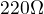
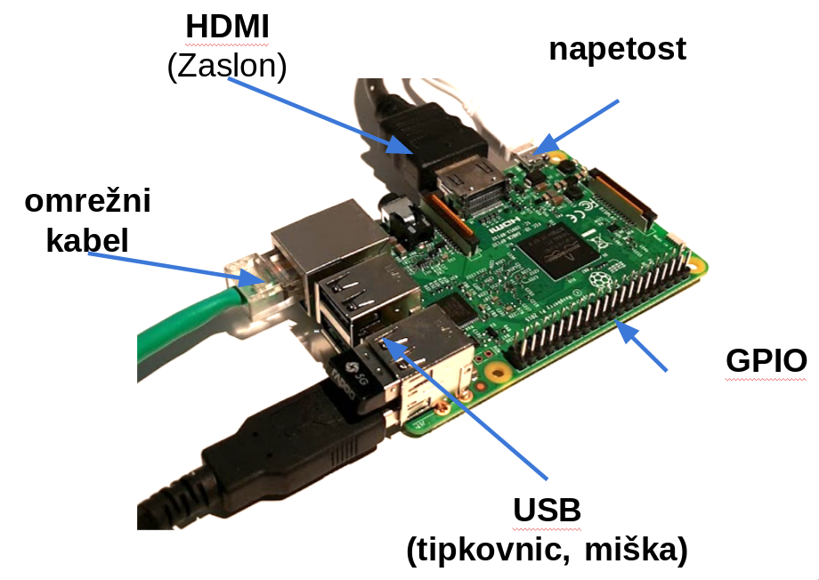
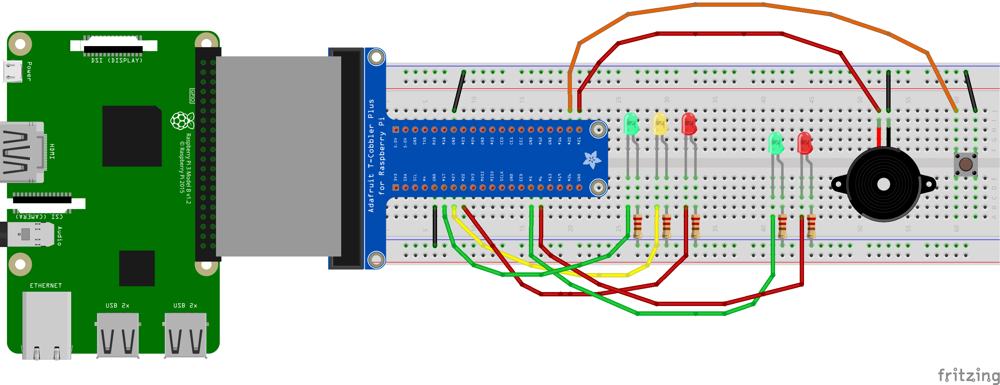
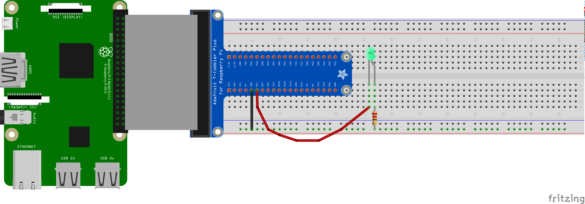
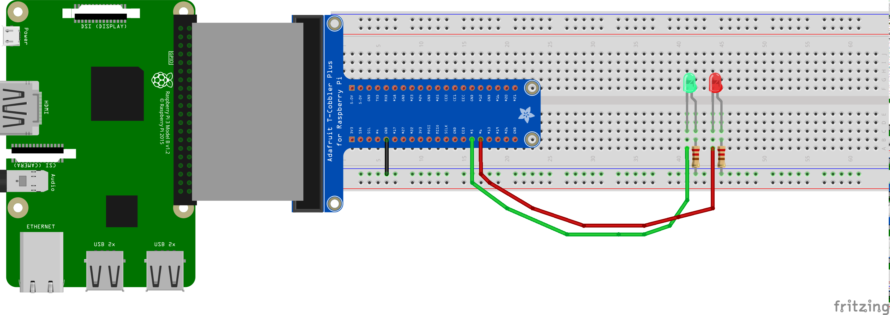
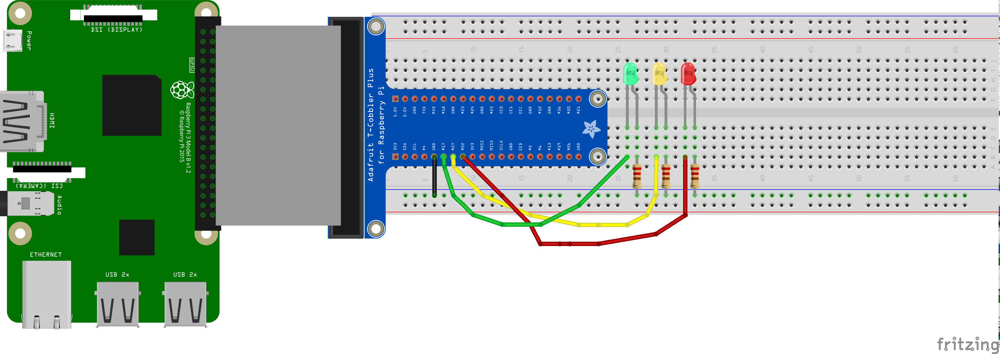

Prometna signalizacija
1 Naloga
S signalizacijo v prometu se srečujemo vsak dan. Naš končni cilj je prehod za pešce za slepe in slabovidne.
2 Sestavine
Pri projektu bomo potrebovali:
- 1x prototipna plošča,
- 1x razširitev in podaljševalni kabel GPIO pinov,
- 5x LED dioda (2x rdeča, 2x zelena, 1x rumena),
- 5x  upornik,
- 1x piskač (buzzer)
- 1x gumb,
- več veznih žičk različnih barv.
3 Priklop Raspbery-Pi

Slika 1 Priklop naprav na Raspbery Pi
4 Spoznavanje Pixle in IDLE
V tem delu bomo spoznali uporabniški vmesnik PIXLE in urejevalnik besedil za programiranje Thonny.
5 Koraki izdelave
Sedaj ko smo spoznali sam kartični računalnik se lahko lotimo sestavljanja našega projekta prometne signalizacije. Sestavili bomo vezje, spoznali bomo elektrotehnične elemente ter posamezne elemente krmilili s programskim jezikom Python.
5.1 Vezje
Na spodnji sliki je končna slika ciljnega vezja signalizacije.

Slika 2 Končna slika vezja z vsemi elementi
5.2 Spoznavanje elektrotehničnih elementov
- Prototipna ploščica
- Upornik
- LED dioda
- Stikalo
- Piskač
5.3 GPIO
GPIO je večnamenski vmesnik za vhodno izhodne narave. Podroben opis posameznih pinov najdemo na spletni strani https://pinout.xyz/.
5.4 Priklop razširitvenega priklopa na prototipno ploščico in R-Piska
Pred sabo imaš prototipno ploščico in na njo vključen razširitveni priklop. Ta nam omogoča samo podaljšek, tako do posameznih pinov GPIO pridemo neposredno na prototipni ploščici, kar nam omogoča nekoliko lažje delo.
5.5 Utripajoča led (1x)
Pri tej nalogi bomo spoznali kako priklopimo eno LED diodo v vezje in jo krmilimo tako, da bo ta utripala.
5.5.1 Vezava LED

Slika 3 Vezje z eno LED diodo.
5.5.2 Programska koda
Za delovanje programa bomo potrebovali dve zunanjivi knjižnici gpiozero in time. gpiozreo bo poskrbela da bomo lahko prižigali in ugašali lučke. Knjižnica time bo poskrbela za pavze. Odpremo program za urejanje besedil Python IDLE 3 ali Thonny. Kopiramo spodnjo programsko kodo v urejevalnik.
import gpiozero import time #inicializacija LED diode led = gpiozero.LED(27) #GPIO povemo, da imamo LED priklopljeno na pinu 27. while True: #Zanka, ki se neskončno ponavlja. led.on() #Z ukazom on() prižgemo LED. print("LED on") #Izpis v ukazno vrstico ali lupino. time.sleep(1) #Zaspi za čas v sekundah. led.off() #Z ukazom off() ugasnemo LED. print("LED off") time.sleep(1)
5.5.3 Vaja
Program spremeni tako, da bodo lučke utripale počasneje ali hitreje.
5.6 Semafor za pešce (2x LED vzporedno)
Sestavimo vezje rdeče in zelene barve ter jih programirajmo tako, da bodo simulirale prehod za pešce.
5.6.1 Vezje

Slika 4 Vezava 2x LED za semafor za peščce
5.6.2 Programska koda
Program od prej spremeni na naslednji način.
- Naredi inicializacijo dveh spremenljivka za dve LED diodi, eno za zeleno in drugo za rdečo.
V
while True:zanko zapiši delovanje semaforja v naslednjih korakih:rdeča prižgana zelena ugasnjena počakaj 3 s rdeča ugasnjena zelena prižgana počakaj 1 s
Poskusi narediti sam po zgornjih napotkih, spodnja programska koda naj ti po le v pomoč, če ti ne bo šlo.
#inicializacija semafor pešci p_zelena = gpiozero.LED(5) p_rdeca = gpiozero.LED(6) while True: p_rdeca.on() p_zelena.off() time.sleep(3) p_rdeca.off() p_zelena.on() time.sleep(1)
5.7 Semafor za avtomobile (3x led vzporedno)
K obstoječemu vezju dodamo vezje semaforja za avtomobile.
5.7.1 Vezje

Slika 5 Vezava 2x LED za semafor za peščce
5.7.2 Programska koda
import gpiozero import time #SEMAFOR AVTOMOBILI #Inicializacija a_zelena = gpiozero.LED(17) a_oranzna = gpiozero.LED(27) a_rdeca = gpiozero.LED(22) while True: a_rdeca.on() a_oranzna.off() a_zelena.off() time.sleep(3) a_oranzna.on() time.sleep(1) a_rdeca.off() a_oranzna.off() a_zelena.on() time.sleep(3) a_oranzna.on() a_zelena.off() time.sleep(1)
5.8 Priklop stikala in priklop piskača
V tem delu bomo priklopili gumb in z njim krmilili vklop semaforja za pešce.
5.8.1 Vezava
Piskača priklopimo posebej na povezave GPIO21, gumb na povezavo GPIO22 in ozemljitev GND.
Glej končno sliko.
5.8.2 Programska koda
#Inicializacija piskača zvok = gpiozero.Buzzer(20) #Inicializacija gumba gumb.Button(21) #Uporaba zanka in pogojnega stavka za preveranje stanja tipke. while True: if gumb.is_pressed: #Z pogojnim stavkom preverjamo če je gumb pritisnjen. zvok.on() #vklop zvoka time.sleep(0.5) else: zvok.off() #Izklop zvoka time.sleep(0.5)
5.9 Končni projekt
Sedaj imamo priklopljene vse elemente. Napisati moramo samo še program, ki bo poganjal simulacijo semaforja.
5.9.1 Vezje
Slika 6 Končna vezava vseh elementov.
5.9.2 Programska koda
#!/usr/bin/env python # -*- coding: utf-8 -*- import gpiozero import time #SEMAFOR AVTOMOBILI #Inicializacija semafor avtomobili a_zelena = gpiozero.LED(17) a_oranzna = gpiozero.LED(27) a_rdeca = gpiozero.LED(22) #inicializacija semafor pešci p_zelena = gpiozero.LED(5) p_rdeca = gpiozero.LED(6) #Inicializacija piskača zvok = gpiozero.Buzzer(20) #Inicializacija gumba gumb = gpiozero.Button(21) def prehod(): time.sleep(2) #oranzna za avtomobile a_zelena.off() a_oranzna.on() time.sleep(1) #rdeca za avtomobile a_oranzna.off() a_rdeca.on() time.sleep(1) #zelena za pesce p_rdeca.off() p_zelena.on() zvok.on() time.sleep(2) #rdeca za pesce zvok.off() p_zelena.off() time.sleep(0.5) p_rdeca.on() a_oranzna.on() a_rdeca.off() time.sleep(1) a_zelena.on() a_oranzna.off() a_rdeca.off() a_oranzna.off() a_zelena.on() p_rdeca.on() p_zelena.off() while True: if gumb.is_pressed: print("Pritisnil!") prehod()
6 Viri in Literatura
- Gregor Anželj, Prometna signalizacija, https://anzeljg.github.io/rpi/rpi/3201/index.html